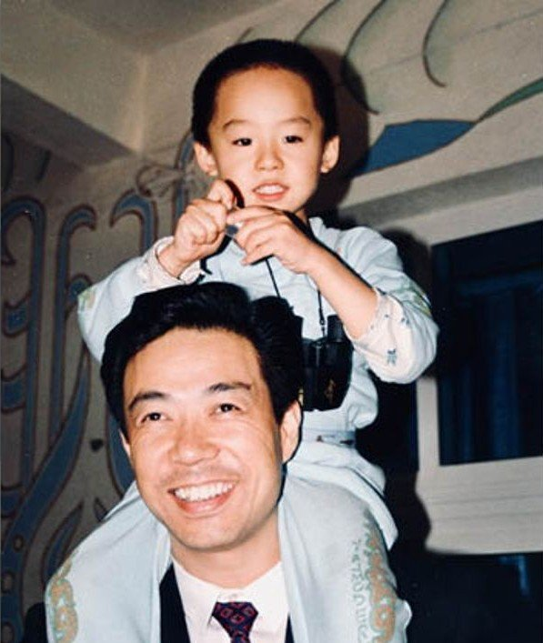

今日科普：中共高层子女取名潜规则
在中共高层家族中，子女取名存在一条隐形潜规则：如果不愿后代参与政治，则偏好使用叠字（ABB式）或“小某”式名字，如瓜瓜、东东、特特、桥桥、了了等。这种命名方式在红二代、红三代中相当普遍。
据相关观察，在上世纪中后期多位中共重要领导人的家族中，至少数十名子女采用此类叠字命名。早期多用“小某”（如小平），后代则盛行ABB式。
这一习惯的核心寓意是：如果不愿子女接班，参与政治斗争，就为他们取一个稚气的名字。历经残酷权力博弈的中共元老们，深知政治风险，为后代取名时故意避开寓意宏大、气势夺人的名字，转而选用听起来永远像孩子的叠字，象征“只是普通小孩”“不涉权力”。这种低调命名如同无声宣言——我的子女不参与政治，不要将他们卷入任何政治斗争，只求平安一生，远离权力漩涡，像前文提到的薄瓜瓜(薄熙来之子)，其叠字名清晰传递出“不入政治”的保护意图。
这种取名文化，反映出中共权力场中长辈对后代的深层保护：“我的子女不参加政治，我们的斗争与他无关”
在中共高层家族中，子女取名存在一条隐形潜规则：如果不愿后代参与政治，则偏好使用叠字（ABB式）或“小某”式名字，如瓜瓜、东东、特特、桥桥、了了等。这种命名方式在红二代、红三代中相当普遍。
据相关观察，在上世纪中后期多位中共重要领导人的家族中，至少数十名子女采用此类叠字命名。早期多用“小某”（如小平），后代则盛行ABB式。
这一习惯的核心寓意是：如果不愿子女接班，参与政治斗争，就为他们取一个稚气的名字。历经残酷权力博弈的中共元老们，深知政治风险，为后代取名时故意避开寓意宏大、气势夺人的名字，转而选用听起来永远像孩子的叠字，象征“只是普通小孩”“不涉权力”。这种低调命名如同无声宣言——我的子女不参与政治，不要将他们卷入任何政治斗争，只求平安一生，远离权力漩涡，像前文提到的薄瓜瓜(薄熙来之子)，其叠字名清晰传递出“不入政治”的保护意图。
这种取名文化，反映出中共权力场中长辈对后代的深层保护：“我的子女不参加政治，我们的斗争与他无关”
